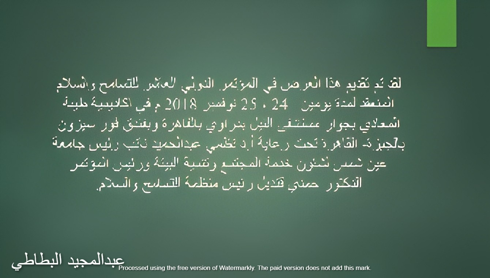
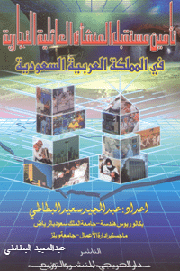
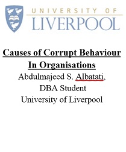

رؤية هندسية رصينة،
وفكر إداري يصنع الاستدامة.
أكثر من أربعة عقود من قيادة المشاريع التنموية الكبرى، حوكمة المنظمات والشركات العائلية، وتأليف الأبحاث العلمية المعتمدة في المملكة العربية السعودية.

د. م. عبدالمجيد البطاطي
مهندس استشاري معتمد (عضوية 201226)، حاصل على ماجستير إدارة الأعمال (MBA) من جامعة ويلز ببريطانيا، باحث دكتوراه في الأداء المؤسسي والحوكمة، ومحكم معتمد من وزارة العدل.
أبحاث وكتب محكّمة متاحة للتحميل المباشر
في البنى التحتية، السدود، والتطوير المؤسسي
.jpg) سد وقناة أم الخير
سد وقناة أم الخير
مشاريع درء أخطار السيول بجدة
إدارة وتنفيذ مشاريع تصريف مياه الأمطار وسدود الحماية الاستراتيجية بشرق جدة بمتابعة وزارة الشؤون البلدية والقروية.
.jpg) جمعية المشاريع البيئية
جمعية المشاريع البيئية
الاستدامة والمسؤولية البيئية
عضوية مجلس إدارة جمعية التعاون للمشاريع البيئية وقيادة مبادرات التوعية المجتمعية والحد من التلوث.
«التعليم يبني الحضارات ويصنع التاريخ»
طرح فكري حول ركائز النهضة التعليمية: الإنسان، المكان، والمنهج، ومكانة المعلم في الحفاظ على النسيج المجتمعي.
الكتب والأبحاث المحكّمة

ورقة عمل المؤتمر العاشر للتسامح والسلام
عرض قُدم بأكاديمية طيبة وجامعة عين شمس بالقاهرة تحت رعاية نخبة أكاديمية دولية.

تأمين مستقبل المنشآت والشركات العائلية
حوكمة الكيانات الأسرية وميثاق العائلة لضمان انتقال الثروة والإدارة بسلاسة عبر الأجيال.

Causes of Corrupt Behaviour in Organisations
تحليل شامل للسلوك المؤسسي وأطر الرقابة الإدارية لتعزيز الشفافية في بيئات العمل.
للتواصل والاستشارات المهنية والتحكيم
مستعد لتقديم الاستشارات الإدارية والهندسية، وإدارة جلسات التحكيم المعتمدة، والمشاركة في المؤتمرات والندوات.